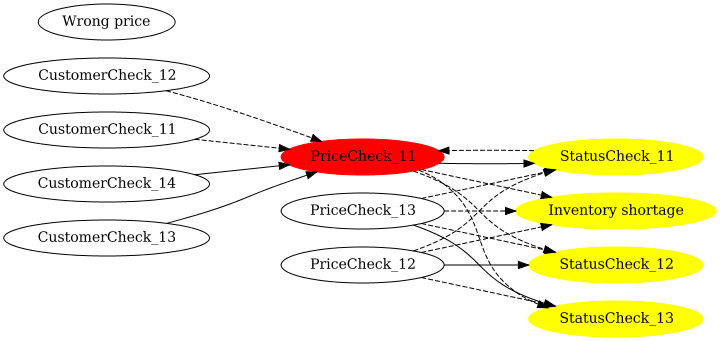
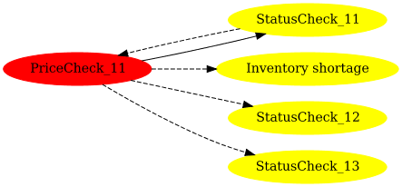
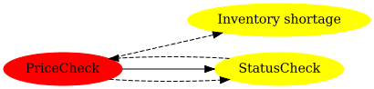
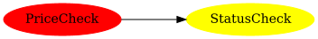

Rule Impact Analysis
After you develop rules and put the system into production, you will need to
maintain the rules to keep up with business requirements. Basically
tests should ensure the correctness and integrity of the updated
rules, but while you work on updating the rules, you might want to
know the "impact" of your changes. Rule impact analysis feature helps you.
drools-impact-analysis is a new experimental module to analyze impacts
of changes in rules, which is available since drools 7.54.0.Final.
drools-impact-analysis parses rules and visualizes the relationships
between the rules. Also it can render impacted rules when you specify
a rule which you plan to change.

Let’s see how to use this feature.
Using the impact analysis feature
Example code can be found in https://github.com/tkobayas/drools/blob/master/drools-impact-analysis/drools-impact-analysis-itests/src/test/java/org/drools/impact/analysis/example/ExampleUsageTest.java
- Have drools-impact-analysis-graph-graphviz in your project dependency
<dependency>
<groupId>org.drools</groupId>
<artifactId>drools-impact-analysis-graph-graphviz</artifactId>
<version>${drools.version}</version>
</dependency>
- Create a
KieFileSystemto store your assets. Then callKieBuilder.buildAll(ImpactAnalysisProject.class). You can getAnalysisModel.
// set up KieFileSystem
...
KieBuilder kieBuilder = KieServices.Factory.get().newKieBuilder(kfs).buildAll(ImpactAnalysisProject.class);
ImpactAnalysisKieModule analysisKieModule = (ImpactAnalysisKieModule) kieBuilder.getKieModule();
AnalysisModel analysisModel = analysisKieModule.getAnalysisModel();- Convert the
AnalysisModeltoGraphusingModelToGraphConverter
ModelToGraphConverter converter = new ModelToGraphConverter();
Graph graph = converter.toGraph(analysisModel);- Specify a rule which you plan to change.
ImpactAnalysisHelperwill produce a sub graph which contains the changed rule and impacted rules
ImpactAnalysisHelper impactFilter = new ImpactAnalysisHelper();
Graph impactedSubGraph = impactFilter.filterImpactedNodes(graph, "org.drools.impact.analysis.example.PriceCheck_11");- Generate a graph image using
GraphImageGenerator. You can choose the format from DOT, SVG and PNG.
GraphImageGenerator generator = new GraphImageGenerator("example-impacted-sub-graph");
generator.generateSvg(impactedSubGraph);- Simple text output is also available using
TextReporter. You can choose the format from HierarchyText and FlatText.
String hierarchyText = TextReporter.toHierarchyText(impactedSubGraph);
System.out.println(hierarchyText);Tips
A typical use case is to view an impacted sub graph because a whole graph could be too large if you have many rules. Red node is a changed rule. Yellow nodes are impacted rules. Solid arrow represents positive impact, where the source rule activates the target rule. Dashed arrow represents negative impact, where the source rule deactivates the target rule. Dotted arrow represents unknown impact, where the source rule may activate or deactivate the target rule.

You can collapse the graph based on rule name prefix (= RuleSet in spreadsheet) using GraphCollapsionHelper. It will help you to see the overview. You can also use ImpactAnalysisHelper to the collapsed graph.
Graph collapsedGraph = new GraphCollapsionHelper().collapseWithRuleNamePrefix(graph);
Graph impactedCollapsedSubGraph = impactFilter.filterImpactedNodes(collapsedGraph, "org.drools.impact.analysis.example.PriceCheck");
You can filter the relations by giving positiveOnly to true for ModelToGraphConverter, ImpactAnalysisHelper and GraphCollapsionHelper constructor. So you can view only positive relations.
ModelToGraphConverter converter = new ModelToGraphConverter(true);
Graph graph = converter.toGraph(analysisModel);
ImpactAnalysisHelper impactFilter = new ImpactAnalysisHelper(true);
Graph impactedSubGraph = impactFilter.filterImpactedNodes(graph, "org.drools.impact.analysis.example.PriceCheck_11");
If the number of rules is very large, text output would be useful. [*] is a changed rule. [+] is impacted rules. A rule with parentheses means a circular reference so it doesn’t render further.
--- toHierarchyText ---
Inventory shortage[+]
PriceCheck_11[*]
StatusCheck_12[+]
(Inventory shortage)
StatusCheck_13[+]
StatusCheck_11[+]
(PriceCheck_11)
--- toFlatText ---
Inventory shortage[+]
PriceCheck_11[*]
StatusCheck_11[+]
StatusCheck_12[+]
StatusCheck_13[+]Note: drools-impact-analysis can parse DRLs and related assets (e.g.
spreadsheets). DMN is not subject to this feature but you know that
DMN already renders relationships between decisions using DRD.
Rule impact analysis is a brand new experimental feature so there is
much room to improve (e.g. usability). We really appreciate your
feedback. Thanks!